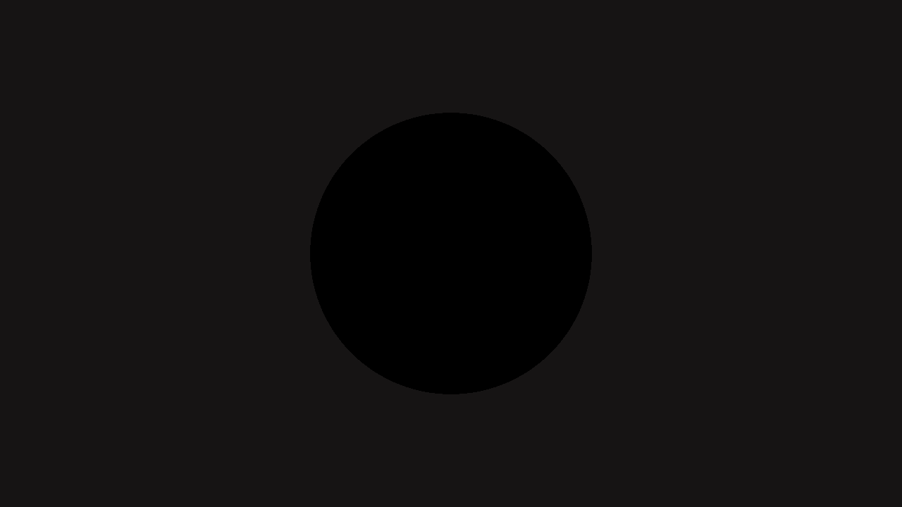
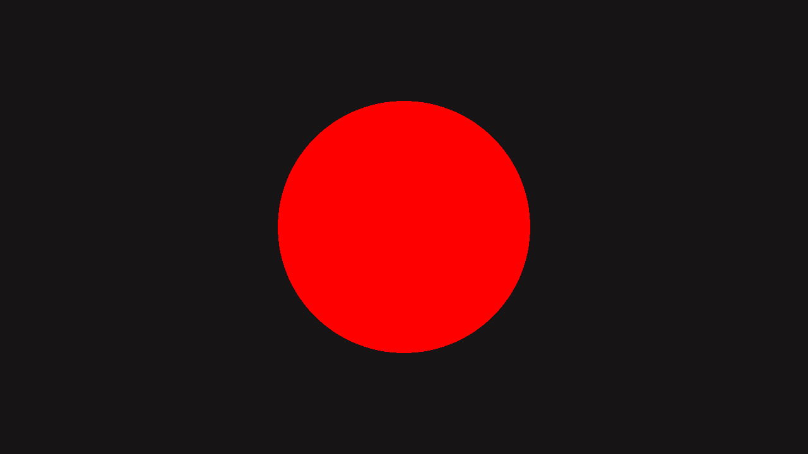

Pantalla negra
Shader Debugging
Techniques
Herman Tulleken
Sara San Martín
Expectativa

Realidad
NaNs
Normales en view
UVs estiradas
Herramientas de depuración en la CPU
- Logs
- Tests unitarios
- Breakpoints


GrayViridisTurbo

Viridis

Turbo

Cosine palette


shadertoy.com/view/4sBSWW

Shader Graph



NoneAlbedoNormalShadow
Radio 2
Radio con sin(t)
× 1
× 10
saturate(hdr)
LogView(hdr)

SweepPulse


Input

Output
Input

Output
Input

Output

Input

Output

Input

Output

Box

Gaussian

Input

Output
Input

Output

Horizontal

Vertical

Outline · Sobel

Outline · Max
Frame Debugger

RenderDoc
y = smoothstep(0.2, 0.8, x)
// graphtoy.com
Desmos
y = 1 / (1 + k·x²) k = [-10, 10]
Little code tricks
RuidoSeno
QR
HermanQR
Sara¡Gracias!
Herman Tulleken
YouTube · Asset Store
Sara San Martín
Links